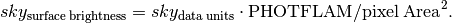

Previous topic
Welcome to skypac’s documentation!
Next topic
SkyLine (chip outline on the sky) management for image mosaic.

Welcome to skypac’s documentation!
SkyLine (chip outline on the sky) management for image mosaic.
A module that provides functions for matching sky in overlapping images.
| Authors: | |
|---|---|
| Mihai Cara, Warren Hack, Pey-Lian Lim (contact: help@stsci.edu) | |
| License: | |
| http://www.stsci.edu/resources/software_hardware/pyraf/LICENSE | |
TEAL interface for skymatch(). Most parameters are identical to those of the skymatch(). Here we mention only the differences:
| Parameters : | |
|---|---|
logfile : str (Default = ‘skymatch_log.txt’)
|
|
Standalone task to compute and/or “equalize” sky in input images.
Note
Sky matching (“equalization”) is possible only for overlapping exposures.
Warning
When readonly is False, image headers will be modified and image data will be background-subtracted if subtractsky is True. Remember to back up original copies as desired.
Warning
Unlike previous sky subtraction algorithm used by astrodrizzle, skymatch() accounts for differences in chip sensitivities by performing sky computations on data multiplied by inverse sensitivity (e.g., value of PHOTFLAM in image headers – see “Notes” section below).
| Parameters : | |
|---|---|
input : str, list of FileExtMaskInfo
skymethod : {‘localmin’, ‘globalmin+match’, ‘globalmin’, ‘match’} (Default = ‘globalmin+match’)
skystat : {‘mode’, ‘median’, ‘mode’, ‘midpt’} (Default = ‘mode’)
lower : float, None (Default = None)
upper : float, None (Default = None)
nclip : int (Default = 5)
lsigma : float (Default = 4.0)
usigma : float (Default = 4.0)
binwidth : float (Default = 0.1)
skyuser_kwd : str (Default = ‘SKYUSER’)
units_kwd : str (Default = ‘BUNIT’)
readonly : bool (Default = True)
subtractsky : bool (Default = False)
dq_bits : int, None (Default = 0)
optimize : {‘balanced’, ‘speed’} (Default = ‘balanced’)
clobber : bool (Default = False)
clean : bool (Default = True)
verbose : bool (Default = True)
flog : str, file object, MultiFileLog, None (Default = ‘skymatch_log.txt’)
|
|
| Raises : | |
RuntimeError :
TypeError :
|
|
Notes
skymatch() provides new algorithms for sky value computations and enhances previously available algorithms used by, e.g., astrodrizzle.
First, the standard sky computation algorithm (see skymethod = 'localmin') was upgraded to be able to use DQ flags and user supplied masks to remove “bad” pixels from being used for sky statistics computations.
Second, two new methods have been introduced: 'globalmin' and 'match', as well as a combination of the two – 'globalmin+match'.
The 'globalmin' method computes the minimum sky value across all chips in all input images. That sky value is then considered to be the background in all input images.
The 'match' algorithm (described in more details below) is somewhat similar to the traditional sky subtraction method (skymethod= 'localmin') in the sense that it measures the sky indipendently in input images (or detector chips). The major differences are that, unlike the traditional method,
- 'match' algorithm computes relative sky values with regard to the sky in a reference image chosen from the input list of images; and
- sky statistics is computed only in the part of the image that intersects other images.
This makes 'match' sky computation algorithm particularly useful for “equalizing” sky values in large mosaics in which one may have only (at least) pair-wise intersection of images without having a common intersection region (on the sky) in all images.
Warning
Because this method computes relative sky values compared to a reference image (which will have its sky value set to 0), the sky values computed with this method usually are smaller than the “absolute” sky values computed, e.g., with the 'localmin' algorithm. Since astrodrizzle expects “true” (as opposite to relative) sky values in order to correctly compute the median image or to perform cosmic-ray detection, this algorithm in not recommended to be used alone for sky computations to be used with astrodrizzle.
For the same reason, IVM weighting in astrodrizzle should not be used with 'match' method: sky values reported in MDRIZSKY header keyword will be relative sky values (sky offsets) and derived weights will be incorrect.
The 'globalmin+match' algorithm combines 'match' and 'globalmin' methods in order to overcome the limitation of the 'match' method described in the note above: it uses 'globalmin' algorithm to find a baseline sky value common to all input images and the 'match' algorithm to “equalize” sky values in the mosaic. Thus, the sky value of the “reference” image will be equal to the baseline sky value (instead of 0 in 'match' algorithm alone) making this method acceptable for use in conjunction with astrodrizzle.
skymatch() converts “raw” sky values (in image data units) obtained directly from image data to “surface brightness”-like units and all computations are performed in these units. Computed sky surface brightness values are converted back to image data units before being subtracted from the image data and/or reported in the skyuser_kwd in the image header.
This conversion from image data units to “surface brightness”-like units is necessary in order to perform correct sky computations for data from various intsruments/detectors. It accounts for differences in exposure times (if image data are in “counts” units) in each input image, differences in pixel scales of different detector chips (instruments), and detector sensitivities.
For images with data in “counts”-like units, the conversion from data units to surface brightness is given by:

and for image data in “count-rate”-like units, this conversion is given by:

As discussed above, skymatch() uses values of various keywords in image headers to perform conversion of sky values to/from data units from/to surface brightness units. The most important keywords are:
BUNIT describes the units of the image data. The units of data are determined from the BUNIT header keyword by searching its value for the division sign ‘/’. If the division sign is not found, then the units are assumed to be “counts”. If the division sign is found in the BUNIT value and if the numerator is one of the following: 'ELECTRONS', 'COUNTS', or 'DN', and denumerator is either 'S', 'SEC', or 'SECOND', then the units are assumed to be count-rate.
If BUNIT is missing then for non-HST images the units will be assumed to be “count-rate”, while for HST images (header keyword TELESCOP= 'HST') the 'INSTRUME' and 'DETECTOR' keywords will be used to infer the units. For the NICMOS instrument, 'UNITCORR' will be used to infer the units. If relevant keywords are missing, the units of image data will be assumed to be “count-rate”. Check the log file for selected units.
EXPTIME – total exposure time, assumed to be in seconds. While the units of EXPTIME are not important for sky computation, it is important that all input images to skymatch() use the same units. This keyword is used only when inferred units for image data are “count-rates”. If EXPTIME is missing when image data units are counts, then variations in exposure time WILL NOT be accounted for. First, the primary header of the image file is searched for EXPTIME and if it is not found in the primary header, then image extension is searched for the presense of EXPTIME keyword.
PHOTFLAM – inverse sensitivity of the detector. At first skymatch() will try to detect PHOTFLAM in the image extension header and if not found, it will look for PHOTFLAM in the primary header. If PHOTFLAM is not present at all, the variations in detector sensitivity WILL NOT be accounted for.
Exposure – a subset of FITS image extensions in an input image that correspond to different chips in the detector used to acquire the image. The subset of image extensions that form an exposure is defined by specifying extensions to be used with input images (see parameter input).
See help for stsci.skypac.parseat.parse_at_line() for details on how to specify image extensions.
Footprint – the outline (edge) of the projection of a chip or of an exposure on the celestial sphere.
Note
The computation of the sky is performed using weighted mean of the (clipped) mode, mean, or median from all chips (selected by the user by specifying desired FITS extensions that need to be processed) in the exposure (but only in the region of the overlap of the two exposures whose sky values are to be compared). For mosaiced exposures, all chips that belong to the “elementary” exposures that formed the mosaic are used to compute the sky value.
skymatch() works directly on geometrically distorted flat-fielded images thus avoiding the need to perform an additional drizzle step to perform distortion correction of input images.
Initially, the footprint of a chip in an image is aproximated by a 2D planar rectangle representing the borders of chip’s distorted image. After applying distortion model to this rectangle and progecting it onto the celestial sphere, it is approximated by spherical polygons. Footprints of exposures and mosaics are computed as unions of such spherical polygons while overlaps of image pairs are found by intersecting these spherical polygons.
A catalog file containing a science image file and extension specifications and optionally followed by a comma-separated list of mask files and extension specifications (or None).
File names will be stripped of leading and trailing white spaces. If it is essential to keep these spaces, file names may be enclosed in single or double quotation marks. Quotation marks may also be required when file names contain special characters used to separate file names and extension specifications: ,[]{}
Extension specifications must follow the file name and must be delimited by either square or curly brackets. Curly brackets allow specifying multiple comma-separated extensions: integer extension numbers and/or tuples (‘ext name’, ext version).
[1] – extension number
[‘sci’,2] – extension name and version
{1,4,(‘sci’,3)} – multiple extension specifications, including tuples
{(‘sci’,*)} – wildcard extension versions (i.e., all extensions with extension name ‘sci’)
[‘sci’] – equivalent to [‘sci’,1]
{‘sci’} – equivalent to {(‘sci’,*)}
For extensions in the science image for which no mask file is provided, the corresponding mask file names may be omitted (but a comma must still be used to show that no mask is provided in that position) or None can be used in place of the file name. NOTE: ‘None’ (in quotation marks) will be interpreted as a file named None.
image1.fits{1,2,(‘sci’,3)} mask1.fits,,mask3.fits[0]
In this case:
image1.fits[1] is associated with mask1.fits[0];
image1.fits[2] does not have an associated mask;
image1.fits[‘sci’,3] is associated with mask3.fits[0].
– Assume image2.fits has 4 ‘SCI’ extensions:
image2.fits{‘sci’} None,,mask3.fits
In this case:
image2.fits[‘sci’,1] and image2.fits[‘sci’,2] and image2.fits[‘sci’,4] do not have an associated mask;
image2.fits[‘sci’,3] is associated with mask3.fits[0]
Primary reason for introducing “sky match” algorithm was to try to equalize the sky in large mosaics in which computation of the “absolute” sky is difficult due to the presence of large diffuse sources in the image. As discussed above, skymatch() accomplishes this by comparing “sky values” in a pair of images in the overlap region (that is common to both images). Quite obviously the quality of sky “matching” will depend on how well these “sky values” can be estimated. We use quotation marks around sky values because for some image “true” background may not be present at all and the measured sky may be the surface brightness of large galaxy, nebula, etc.
Here is a brief list of possible limitations/factors that can affect the outcome of the matching (sky subtraction in general) algorithm:
Examples
This task can be used to match skies of a set of ACS images simply with:
>>> from stsci.skypac import skymatch
>>> skymatch.skymatch('j*q_flt.fits')
The TEAL GUI can be used to run this task using:
>>> from stsci.skypac import skymatch
>>> epar skymatch
or from a general Python command line:
>>> from stsci.skypac import skymatch
>>> from stsci.tools import teal
>>> teal.teal('skymatch')